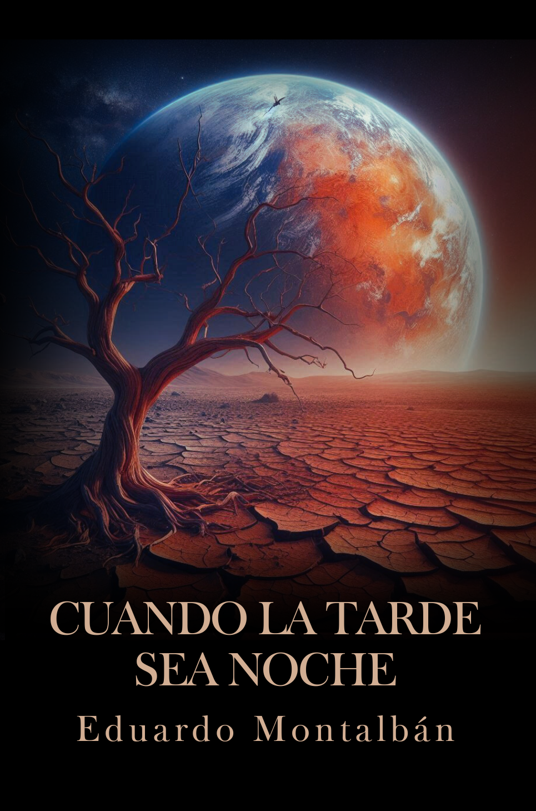

Sobre el autor
Eduardo G. Montalbán es un autor contemporáneo que explora las emociones humanas a través de su narrativa.
Con una prosa poética y profunda, sus obras invitan a la reflexión y al descubrimiento personal.
Último libro

Descubre el último libro de la trilogía, una obra que desafía los límites de la narrativa contemporánea.
Leer extractoLibros
<


>
Lágrimas Calladas
Un viaje emocional a través de la pérdida y la redención.
Leer extractoCuando la Tarde Sea Noche
Una historia de amor y superación en tiempos difíciles.
Leer extractoMaraña de Silencios
Un thriller psicológico que te mantendrá al borde del asiento.
Leer extracto